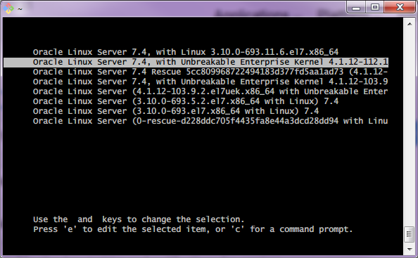
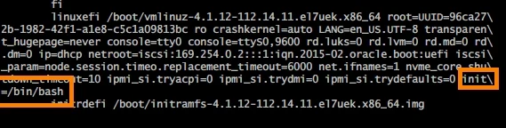

チュートリアル一覧に戻る : Oracle Cloud Infrastructure チュートリアル
Oracle Cloud Infrastructure でLinuxインスタンスを作成するとデフォルトで sshd が起動し外部からsshでアクセスできるようになります。普通はこのsshで大抵の処理を行うことができますが、ごくたまにsshできない環境からアクセスが必要だったり、あるいはできていたsshが突然できなくなってしまったといった場合があります。そんなアクセスできないトラブル発生時に、コンソール・アクセスが有効な手段になる場合があります。
このチュートリアルでは、Oracle Cloud Infrastructure のインスタンスに対してシリアル・コンソールやVNCコンソールを通じてアクセスする方法を学習します。
また、今回はクライアントにWindows PCを利用します。Mac OS または Linux クライアントからのアクセスについては、マニュアルなどの別ドキュメントを参照してください。
所要時間 : 約20分
前提条件 :
- Oracle Cloud Infrastructure で、作成済みのLinuxインスタンスがあること
- コンソール・アクセスの認証に使用するSSH鍵ペアを作成済なこと
注意 : チュートリアル内の画面ショットについては Oracle Cloud Infrastructure の現在のコンソール画面と異なっている場合があります
目次 :
- はじめに シリアル・コンソールが有効なケースの整理
- アクセス元クライアントの準備
- インスタンスでのコンソール接続許可の作成
- シリアル・コンソール接続文字列の取得
- インスタンスのシリアル・コンソールに接続
- シリアル・コンソールを使ってメンテナンス・モードでブートする
- メンテナンス・モードでシステム設定ファイルを編集する
- インスタンスのssh鍵を再登録してアクセスを回復する
0. はじめに シリアル・コンソールが有効なケースの整理
コンソール・アクセスの代表的なユースケースには、以下のようなものがあります。
何らかの理由でOSがブートしないインスタンスにアクセスしてトラブル・シュートする- コンソールやAPI上ではインスタンスは起動しているのに、実際にはOSがブートしていないため、sshでログインしても応答が返ってこない、というケースが時々発生します
- 特にBYOI(Bring Your Own Image)でオンプレミスのマシンイメージを持ち込んだ場合、何らかの設定ミスでブートしてこないというケースはまま発生します
- そのような場合に、このシリアル・コンソールへのアクセスを利用することで、ブートシーケンスを見ながら原因の追求することができるようになります
秘密鍵が失われるなどしてsshアクセスできなくなったインスタンスに再びsshできるようにする- インスタンスにアクセスするためのssh秘密鍵をなくしてしまったり、パスフレーズを忘れてしまった場合、基本的回復は不可能です
- しかしそのような場合でも、シリアル・コンソールを利用し、メンテナンスモードでbash shellにログインすることで、opcユーザーのauthorized_keysに新たなssh公開鍵を登録して、再びsshでアクセスできるようにすることができるようになります
ローカル環境から22番ポート以外でインスタンスにアクセスする- ちょっと例外的な使い方ですが、シリアル・コンソールを利用することで、ローカル側からhttps(tcp/443)でインスタンスにアクセスをすることができるようになります
- このため、もしローカル側のファイアウォールでssh(tcp/22)が閉じられている場合にも、インスタンスに対してアクセスすることができるようになります
- ただし、シリアル・コンソールからのユーザーのログインを許可するために、予めアクセスしたいユーザーに対してパスワードを設定しておく必要があります
1. アクセス元クライアントの準備
クライアントが Mac OS や Linux の場合には、備わっているシェルとOpenSSHをそのまま使用することができますが、Windows OSの場合は追加で PuTTY(plink.exe) または OpenSSH をインストールする必要があります。
今回は、Windows に Git for Windows をインストールし、そこに含まれる Git Bash シェルと、OpenSSHを利用します。
また、適切なディレクトリにコンソール・アクセス用の秘密鍵を配置します。
Git Bash以外にも、OpenSSHが利用できるコマンドラインツール(シェル)であれば何でもOKです
(例)Windows Subsystem for Linux、Cygwin、MobaXtermなど
PuTTY (plink.exe)を利用してもシリアル・コンソールにアクセスは可能ですが、筆者がためしたところGRUBブート画面でのキーアクセスがうまく受け付けてくれないなどの動きをします(原因は不明です)。OpenSSHの方が安定しているようですので、こちらを利用することをお勧めします
-
https://git-scm.com/download/win にアクセスし、Git for Windows をダウンロードし、インストールを完了します。
- Git Bash から ssh が実行できることを確認します。Windows 7 の場合は以下の方法で起動します
- Windows キーを押して
プログラムとファイルの検索ボックスにgitとタイプし、検索されたプログラムからGit Bashを選択します
- Windows キーを押して
-
立ち上がった Git Bash ウィンドウで、
sshと入力し、Enterキーを押します 以下のようなヘルプ出力が返ってきたら、Git Bash のインストールは無事完了しています
-
Windowsからエクスプローラーを開き、上のパス入力フィールドに
%homedrive%%homepath%と入力し、Enterキーを押します
-
「
.ssh」 というフォルダを新しく作成し、予め作成しておいたssh鍵ペアのうち秘密鍵をコピーし、id_rsaという名前で保存します(拡張子なし)
以上で、ローカルPC側の準備は完了です。
2. インスタンスでのコンソール接続許可の作成
インスタンスは、作成した初期状態ではシリアル・コンソール・アクセスが許可されていません。許可するには、OCIのコンソール画面またはAPIから Console Connection というオブジェクトをインスタンス毎に作成し、コンソール・アクセスを許可する必要があります。
-
コンソールメニューから
Compute → Instancesを選択し、シリアル・コンソール接続を許可したいインスタンスの名称のリンクをクリックします -
画面の左下の
ResourcesメニューからConsole Connectionsを選択します -
Create Console Connectionボタンを押します - 立ち上がった **
Create Console Connection ウィンドウに以下の項目を入力し、**Create Console Connection ボタンを押しますSSH KEY- 以下のいずれかを実行しますCHOSE SSH KEY FILESラジオボタンを選択した上で、Browseボタンを押し、ローカルにあるSSH公開鍵ファイル(console.pub)を選択CHOSE SSH KEY FILESラジオボタンを選択した上で、下部のDrop SSH key files here...フィールドにローカルにあるSSH公開鍵ファイルをドラッグ & ドロップPASTE SSH KEYSラジオボタンを選択した上で、下部のフィールドにローカルにあるSSH公開鍵の文字列をコピー & ペースト

-
コンソール上に作成したコンソール接続が表示され、ステータスが ACTIVE になっていることを確認します

3. シリアル・コンソール接続文字列の取得
コンソール接続の作成が完了すると、画面やAPIなどから接続に必要な情報を取得することができます。
-
作成したコンソール接続の右の・・・メニューを開き、
Connect with SSHを選択します -
立ち上がった
Connect With SSHウィンドウで、PLATFORMにLINUX / MAC OSを選択し、CONNECTION STRINGボックス左下のCopyリンクをクリックし、接続文字列をクリップボードにコピーします
Windows OSクライアントからアクセスをする場合でも、OpenSSHを利用する場合はPLATFORMにWINDOWSではなくLINUX / MAC OSを選択してください (WINDOWSは PuTTY (plink.exe) 経由でアクセスをする場合にのみ使用します)

- 【任意】コピーした文字列を、任意のテキストエディタに保存します
4. インスタンスのシリアル・コンソールに接続
取得した接続文字列を利用して、インスタンスのシリアル・コンソールに接続します。
- Windows プログラムから、Git Bash を起動します。Windows 7 の場合は以下の方法で起動します
- Windows キーを押して
プログラムとファイルの検索ボックスにgitとタイプし、検索されたプログラムからGit Bashを選択します
- Windows キーを押して
-
立ち上がった Git Bash ウィンドウに、先ほどコピーした接続文字列をペーストし、Enterキーを押します
-
はじめてアクセスしているため、既知のホストに登録するかどうかを聞かれます。
Are your sure you want to continue connecting (yes/no)?と質問されるので、yesと入力し Enterキーを押します -
コンソール・アクセスは踏み台を経由して行うため、もう一度同じ質問をされます。再び yes と入力し、Enterキーを押します
-
これでコンソール・アクセスは完了しています。もういちど Enter キーを押すと、ログインプロンプトが表示されます。

以上で、シリアル・コンソールへのアクセスは完了です。
5. シリアル・コンソールを使ってメンテナンス・モードでブートする
シリアル・コンソールを利用すると、インスタンスをメンテナンス・モードでブートを行うことができるようになります。
これにより、ブートできなくなったインスタンスの設定情報を変更したり、ログインできなくなったssh鍵を入れ替えたりすることができるようになります。
-
ステップ4までを完了し、シリアル・コンソールに接続した状態にします
-
Oracle Cloud Infrastructure のコンソールメニューから、作業を行いたいインスタンスの詳細ページにアクセスし、
Rebootボタンを押します -
リブートプロセスが開始されたら、シリアル・コンソールの端末ウィンドウに戻ります。端末ウィンドウにメッセージが表示されはじめます。 GRUBブートメニューがウィンドウに現れたら、すぐにキーボードの「上(↑)」「下(↓)」キーを入力して、自動起動プロセスを停止します ブートしたいカーネルを選択した後、ブートメニューで、e とタイプし、ブート・エントリーの編集モードに入ります

-
編集モード画面で、
linuxefi (Oracle Linux 7.xの場合)またはkernel (Oracle LInux 6.xの場合)で始まる行を探し、行の末尾に、以下の文字列を追記しますinit=/bin/bash
-
CTRL + xキーを押し、インスタンスを再度リブートします。ブートが完了すると、メンテナンスモード(bashコンソール)にアクセスできるようになります。
6. メンテナンス・モードでシステム設定ファイルを編集する
起動できなくなったインスタンスのシステム設定ファイルを編集するには、以下のステップを実行してSELinuxの設定を変更し、rootパーティションへの書込権限を取得する必要があります。
- メンテナンス・モードのBashシェルにおいて、以下のコマンドを入力してSELinuxのポリシーをロードします。
/usr/sbin/load_policy -i - 以下のコマンドを実行し、rootパーティションへの書込権限を取得します
/bin/mount -o remount, rw / -
システム設定ファイルを変更し、再度ブートできるようにします。
- システム設定ファイルの変更が完了したら、以下のコマンドでリブートをかけます
/usr/sbin/reboot -f
7. インスタンスのssh鍵を再登録してアクセスを回復する
秘密鍵を失うなどの理由でsshでリモートアクセスできなくなった場合に、シリアル・コンソールを利用してssh鍵を再登録することができます。
- メンテナンス・モードのBashシェルにおいて、以下のコマンドを入力してSELinuxのポリシーをロードします。
/usr/sbin/load_policy -i - 以下のコマンドを実行し、rootパーティションへの書込権限を取得します
/bin/mount -o remount, rw / - Bashシェル以下を実行し、ssh鍵を再登録したいユーザーのsshディレクトリに移動します
cd ~opc/.ssh - 既存の認証済み鍵ファイルをリネームします
mv authorized_keys authorized_keys.old - 新しいssh公開鍵を追加します
echo '<再登録したい公開鍵の文字列>' >> authorized_keys - 変更が完了したら、以下のコマンドでリブートをかけます
/usrsbin/reboot -f
これで、この章の作業は終了です。
Oracle Cloud Infrastructure では、インスタンスへのアクセス方法として、このチュートリアルで紹介したシリアル・コンソールの他に、VNCによるコンソール・アクセスも用意しています。用途に合わせて適切なアクセス方法を利用してみてください。
チュートリアル一覧に戻る : Oracle Cloud Infrastructure チュートリアル